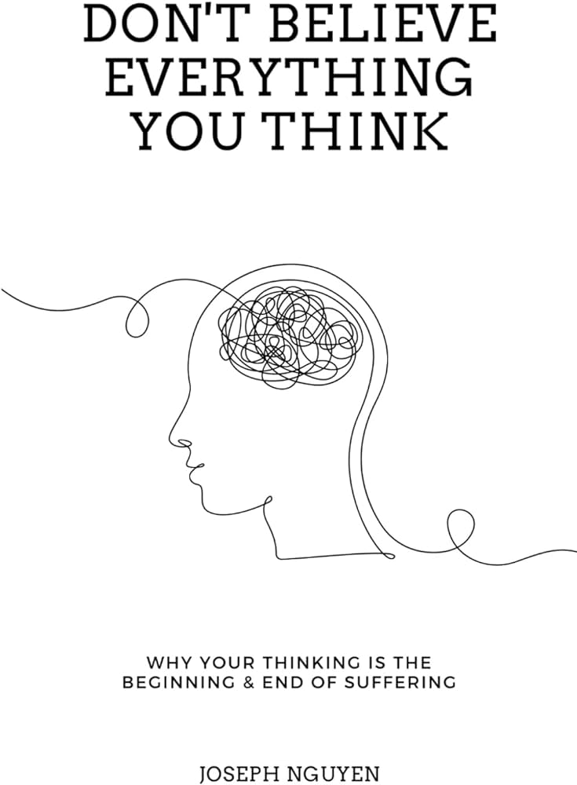
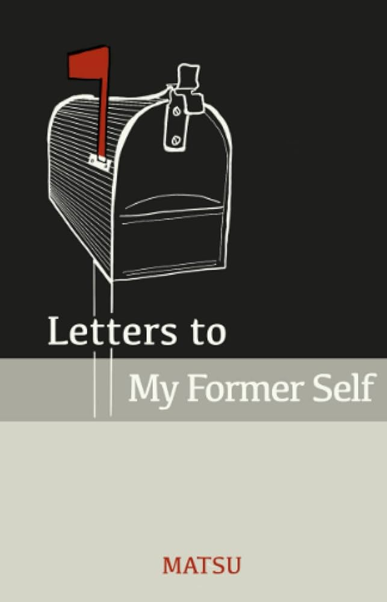

Bookshelf
Don't Believe Everything You Think
Currently Reading
I started to read this book in August of 2024. Nguyen talks about our mind and how our thoughts are not our realities. It covers how we as humans do not suffer because of the things that happen to us, we suffer because of how we perceive those things. So far, it's an extremely powerful read and has gifted me with one of my favorite quotes at the moment:
"I think and think and think, I've thought myself out of happiness a million times, but never once into it." - Jonathan Safran Foer
The Power of Now

The Power of Now is a book with a copious amount of great information. It was truly one of those reads where I constantly thought about the fact that I was getting all of this information in a few months when the author likely spent much of his life discovering these truths. This book, a lot like Don't Believe Everything You Think, dives deep into the inner workings of the human mind. Since reading this, I always try to live in the present moment and do my best to limit my short-term desires that will not help me to live a happy life.
Letters to My Former Self
Letters to My Former Self is a "straight-shooter" kind of book. There is no beating around the bush. Matsu tells you how it is. It gives you some hard truths, such as, you are owed nothing, you act too emotionally, you are the cause of all of your troubles, and so much more. Matsu covers the deep stuff like purpose in life and then the not-so-deep stuff like, stop talking over people in conversation. It is a pretty short book and I read it in one sitting, but it has so much information that I find myself revisiting constantly.